Brainbots Brand Guidelines
TL;DR: Replace balanced dashboard-like compositions with VANTA’s deliberately uneven editorial hierarchy: oversized titles and specimens, large quiet stages, small external captions, and widely spaced asset chapters.
Final verification uses current 1440px captures for every revised section. Checks at 390px, 744px, and 1024px found no horizontal overflow, with the Moodboard resolving to the configured 2/3/4-column progression.
Previous state
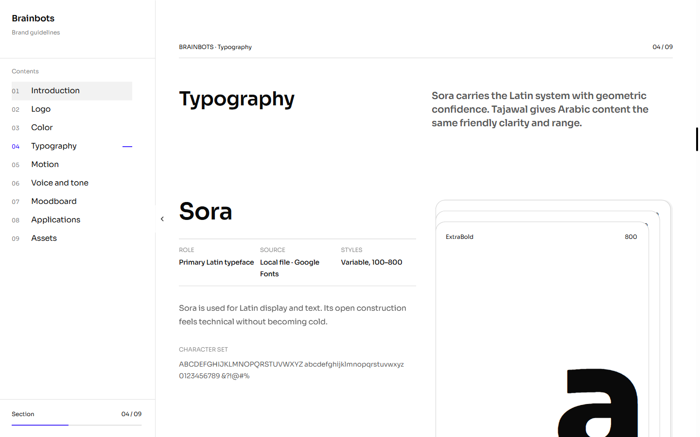
1. Dominant type-family specimen
Give the family name most of the left half, use tall vertical weight sheets on the right, and move supporting detail below the first viewport.
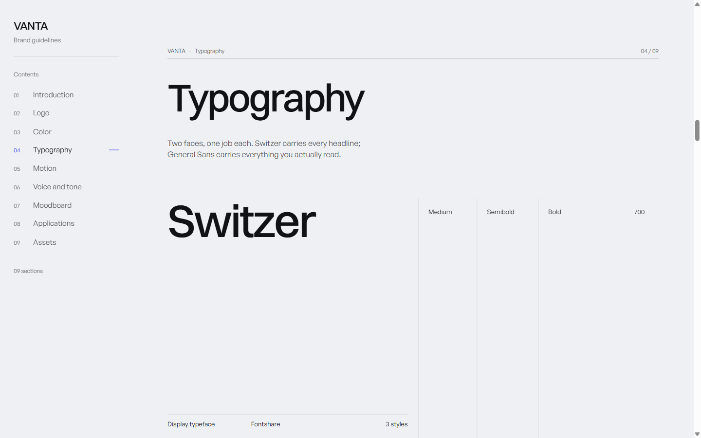
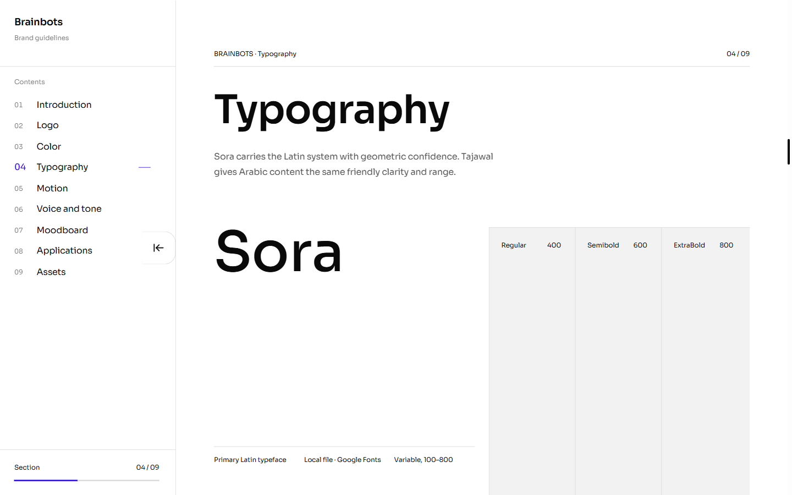
2. Large stages and external captions
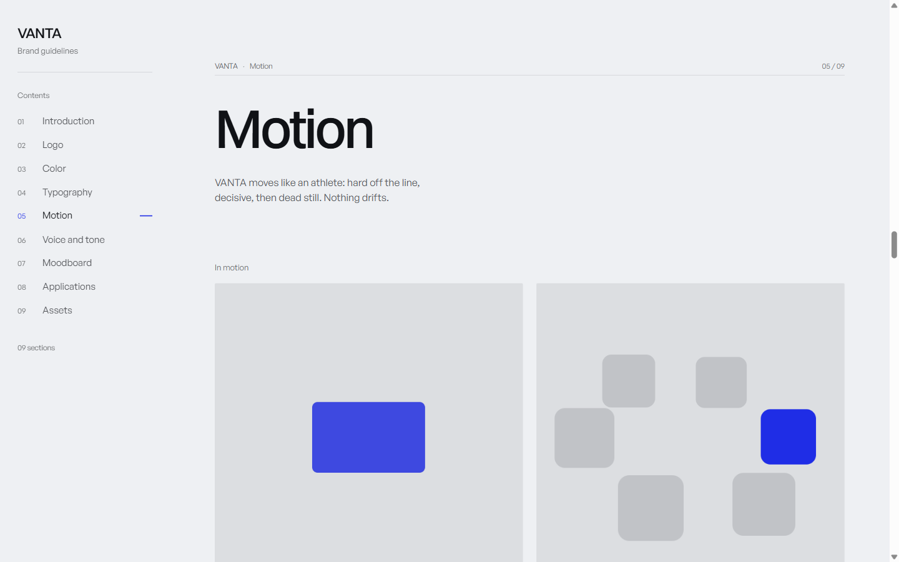
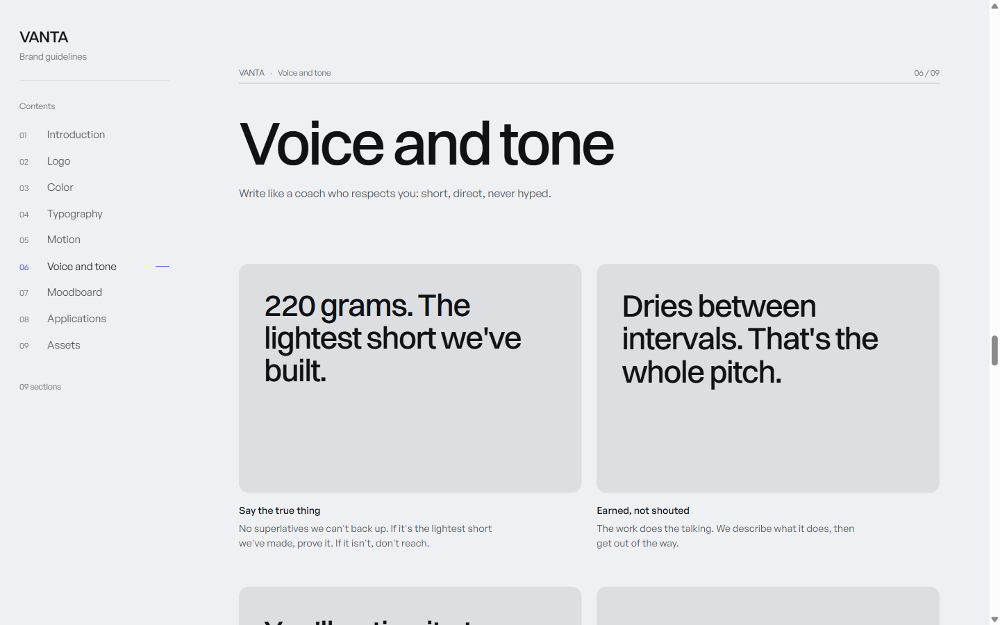
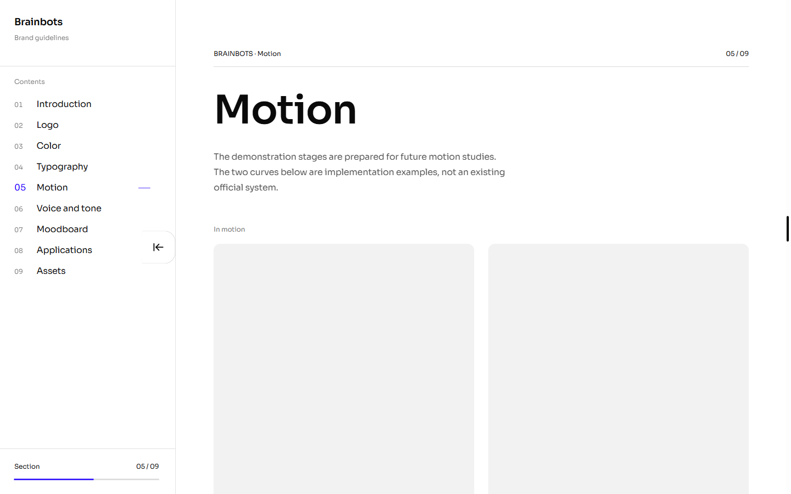
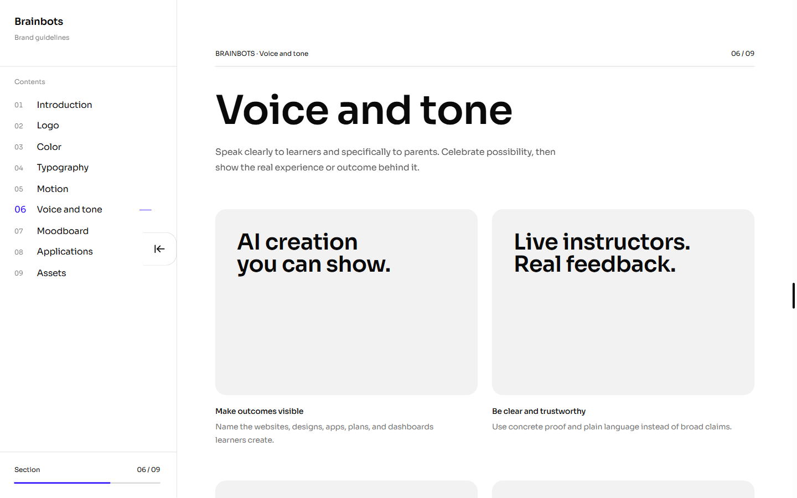
3. Consistent editorial imagery
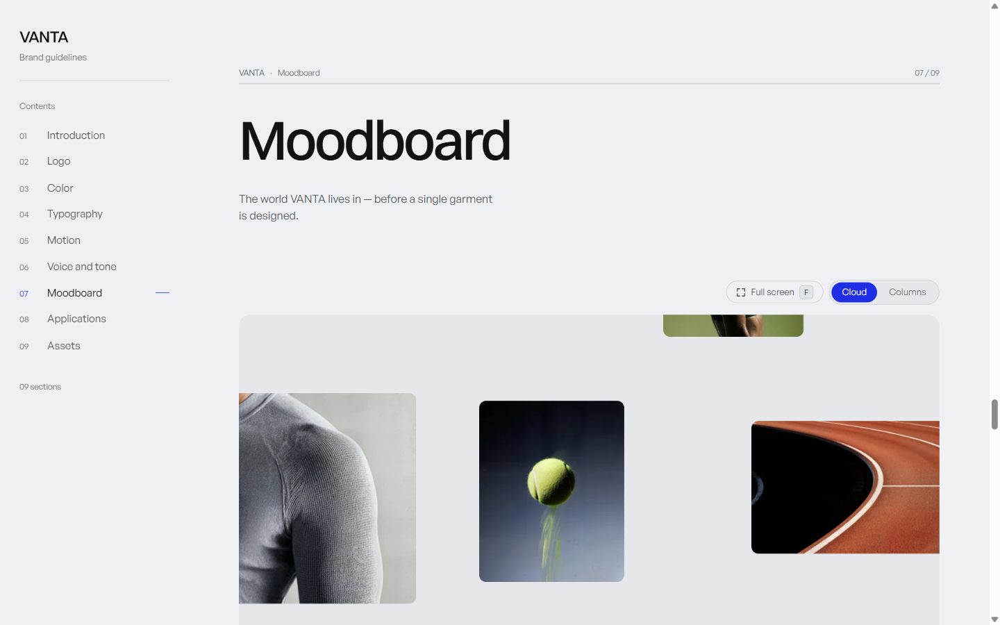
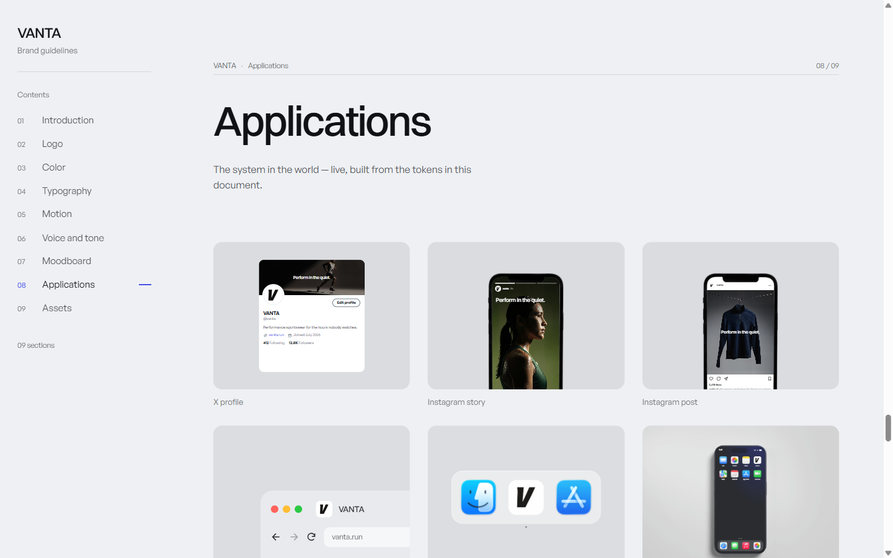
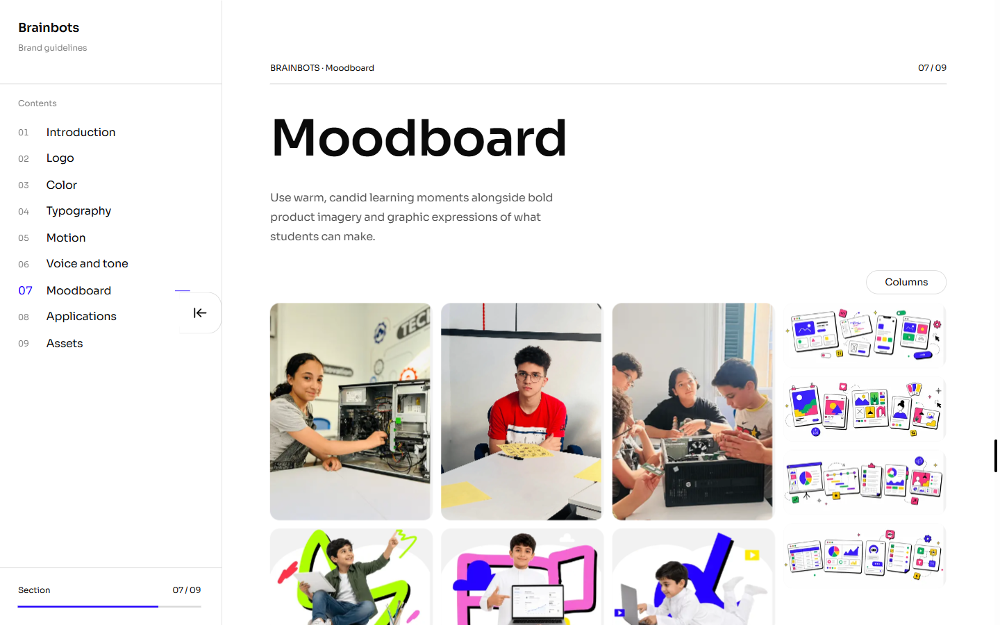
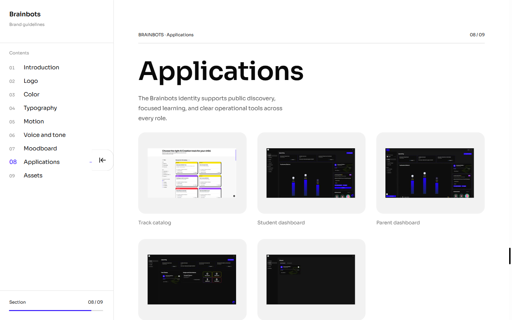
4. Asset categories as chapters
Use a strong intro, a quiet complete-pack action, and long vertical category bands with flat download rows.
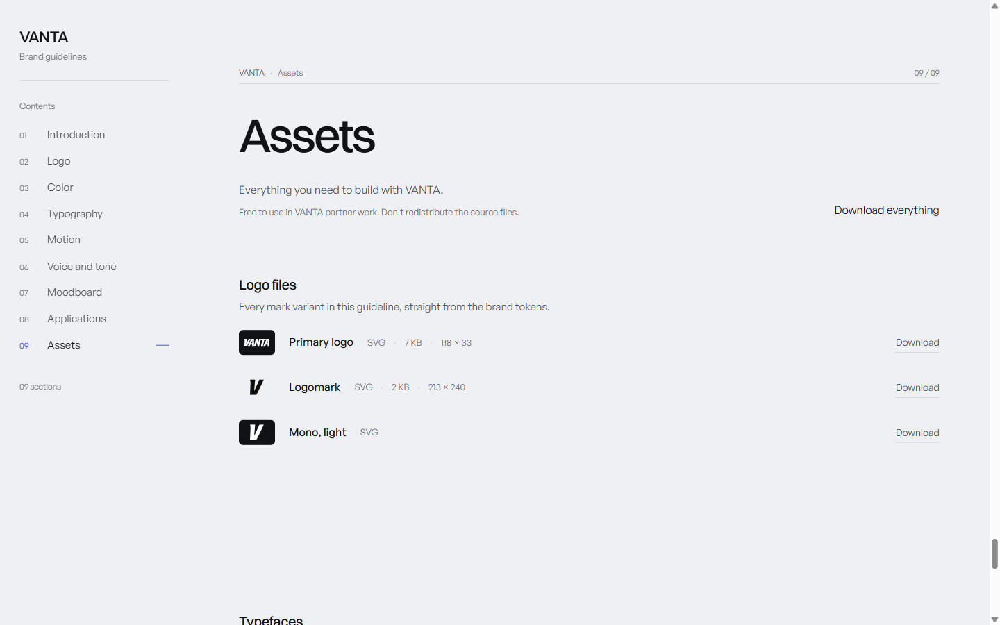
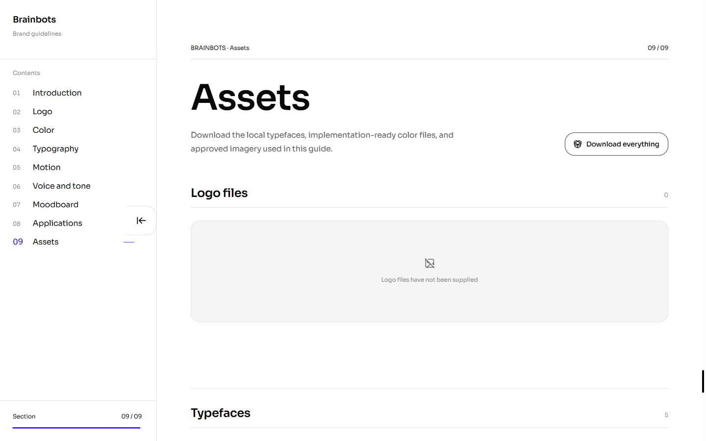
What remains strong
- The nine-section information architecture.
- Typed, data-driven brand content and assets.
- Aligned navigation and document metadata.
- Purposeful empty states for missing logo and motion content.